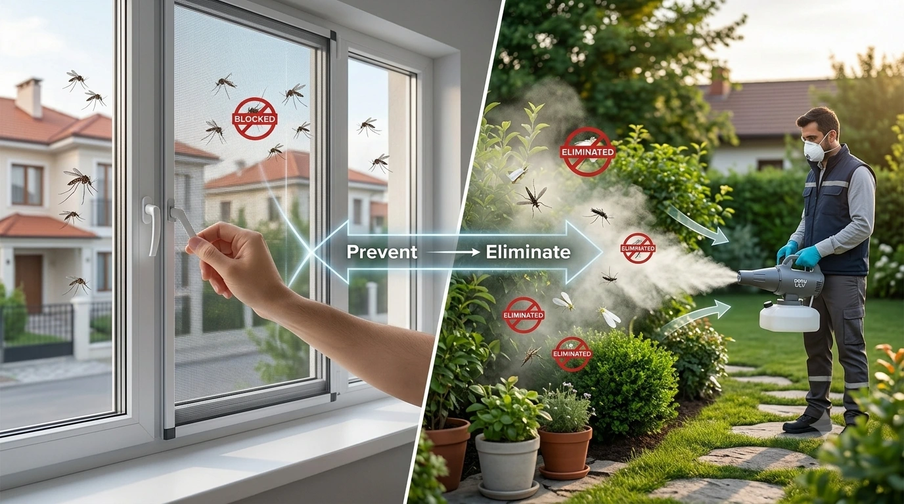

Pencere Sinekliği Sinekle Mücadelede Yeterli mi?
Sinekle mücadele denince akla ilk gelen çözümlerden biri pencere sinekliğidir — ve haklı bir sebeple: doğru monte edilmiş bir sineklik, sineğin eve girmesini fiziksel olarak engeller, kimyasal içermez, çocuklu evlerde ve yatak odalarında güvenle kullanılabilir. Ama gerçekçi olmak gerekirse, soru "sineklik yeterli mi?" değil, "hangi sorunu çözer, hangi sorunu çözmez?" olmalı. Bu yazıda, sinekliğin gerçekte ne işe yaradığını ve nerede tek başına yetersiz kaldığını, üretici bakış açısıyla ele alıyoruz.
Sinekliğin Gerçekten Çözdüğü Sorun: Giriş Engelleme
Pencere sinekliği, "kaynak" değil "kapı" sorununu çözer. Yani evinizin dışında zaten var olan sivrisinek, karasinek veya diğer uçan haşerelerin içeri girmesini engeller. Bu, hem mekanik hem de kalıcı bir bariyer olduğu için, doğru ölçü ve doğru montajla yapıldığında oldukça etkilidir — pencere veya kapı açıkken bile hava sirkülasyonunu keserek değil, sadece haşereyi süzerek çalışır.

Sinekliğin Çözemediği Sorun: İçeride veya Bahçede Zaten Olan Haşere
Sineklik, evin içinde zaten bulunan bir haşereyi yok etmez — sadece yenisinin girmesini engeller. Eğer evinizde, bahçenizde, bodrumunuzda veya site genelinde zaten üreyen bir sivrisinek popülasyonu varsa (örneğin bahçedeki su birikintisi, çiçek saksısı altlığı, açık su deposu gibi üreme alanları nedeniyle), sineklik bu kaynağa hiçbir şey yapmaz. Sineklik kapalıyken bile, kapı her açıldığında, balkon kullanıldığında veya sineklikteki en ufak bir boşluktan haşere içeri sızabilir.
Neden İkisi Birlikte Kullanılmalı?
Etkili bir sinekle mücadele stratejisi, fiziksel bariyer (sineklik) + kaynakta mücadele (ULV ilaçlama) kombinasyonunu gerektirir:
- Sineklik — evinizin tüm pencere ve kapılarına monte edilen kaliteli bir sineklik sistemi, günlük girişi minimum seviyeye indirir.
- ULV ilaçlama — bahçenizde, balkonunuzda veya evin çevresinde zaten üreyen haşere popülasyonunu, profesyonel bir el tipi ULV ilaçlama makinesi veya sırt tipi cihaz ile düzenli aralıklarla kontrol altına alır.
Bu iki çözüm birbirini tamamlar: sineklik "kapıyı kapatır", ULV ilaçlama ise "kaynağı kurutur". Sadece birini yapmak, sorunu yarı yarıya çözer.
Kayseri'de Doğru Sineklik İçin Nereye Bakmalı?
Eğer pencere veya kapı sinekliğiniz yoksa veya mevcut sinekliğinizde yıpranma, boşluk gibi sorunlar varsa, bu konuda Kayseri'de uzmanlaşmış bir firmayla çalışmanızı öneririz. Kayseri Sineklik (Edeka Otomatik Kapı Sistemleri), plise, menteşeli, sürgülü ve kedi sinekliği gibi farklı modellerde, Kayseri'de montajlı, Türkiye'nin 81 iline kargo ile ölçüye özel üretim yapıyor. Onların pencere sinekliği ve kapı sinekliği ürünleri, yazımızın bu bölümünde anlattığımız "fiziksel bariyer" katmanını tamamlamak için iyi bir başlangıç noktası.